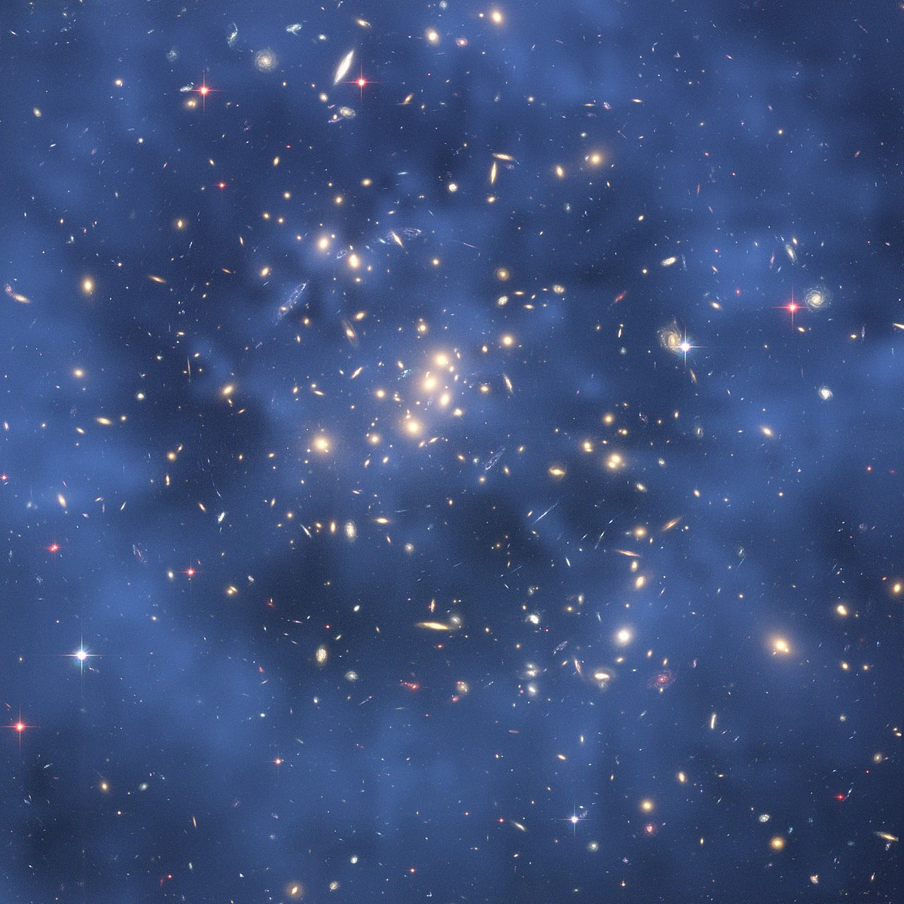

La materia oscura es una materia que no interacciona con el campo electromagnético. Su nombre hace referencia a que se considera que no emite ningún tipo de radiación electromagnética (como la luz). De hecho, no interactuaría en ninguna forma con la radiación electromagnética, siendo completamente transparente en todo el espectro electromagnético.
A finales del siglo XX los astrónomos detectaron que las estrellas alrededor de la vía lactea se movían con una velocidad igual de rapida que las que estaban adentro, esto no tiene sentido, ya que para que esto suceda, debería existir una masa que haga que la gravedad acelere esas estrellas, la explicación que le dieron es que existe una masa, la cual no podemos ver y bautizaron como materia oscura.
Razones por las que se teoriza la existencia de materia oscura:
En los grandes grupos de galaxias la velocidad a la que se mueven esmucho más alta que las fuerzas que parecen mantener todo el conjunto unido por lo que esta fuerza tiene que ser mayor.
En la tierra recibimos la emisión de los comulos de gas en forma de rayos x, con esto podemos medir su velocidad, pero es demasiado alta en comparación a los calculos hechos por los físicos.
La materia curva el espacio tiempo, así como los rayos de luz que pasan a través de esa materia, el problema aquí es que la luz se curva más de lo que debería, es decir, hay una masa que no estamos viendo.
La estructura del universo, según simulaciones, debería ser más esparcida a como la vemos hoy en día, la explicación es que hay una masa que no estamos viendo que hace que los objetos del universo esten más juntos.